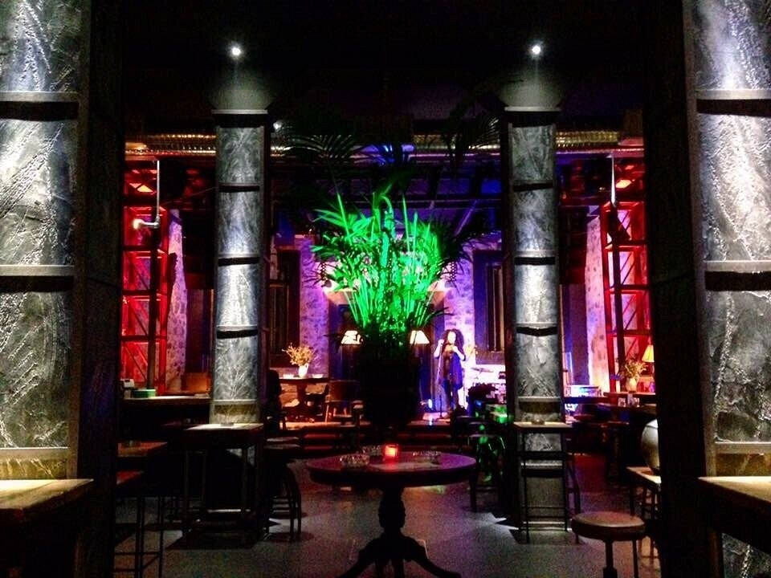
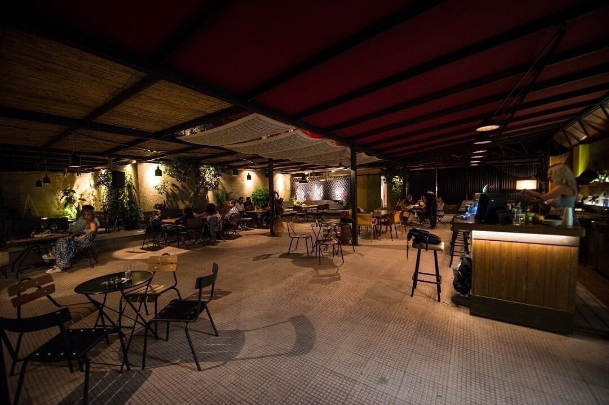
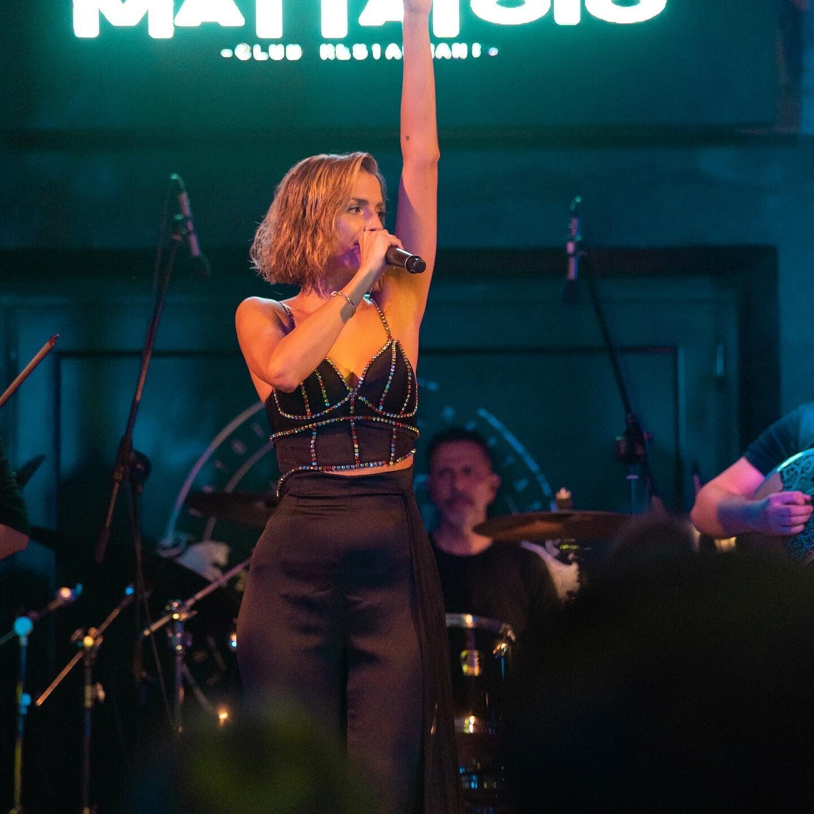

Kos-stad, rand centrum
Mattatoio is een van de grootste en populairste nachtclubs in Kos-stad, gelegen in het centrum. Ze staat bekend om zijn hoge-energie nachtleven met een mix van traditionele Griekse charme en moderne feestvibes.

Het opent vaak rond middernacht en draait door tot diep in de nacht met DJ-sets huis, RnB, commercial en themafeesten zoals, live optredens van bekende artiesten op speciale avonden.

De sfeer is bruisend en gemixt met voornamelijk locals, mensen die er als toerist zijn, en locals van omliggende eilanden, dus de sfeer is een stuk gereserveerder en eleganter.

Je ziet hier geen wild onder de bar dansen, schreeuwend of lallend gedrag; Grieken zijn over het algemeen behouden als het om uiterlijk vertoon gaat. Het draait meer om zien en gezien worden: goed gekleed, stijlvol chillen, genieten van de muziek en de cocktails, met een subtiele 'look at me'-vibe zonder overdreven te worden.
Ideaal voor wie zin heeft in een echte clubnacht met goede muziek.
Adres
Antigonis, Kos-stad